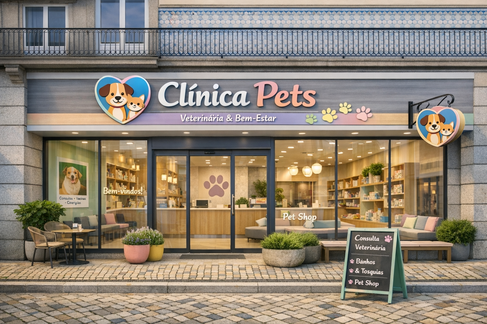
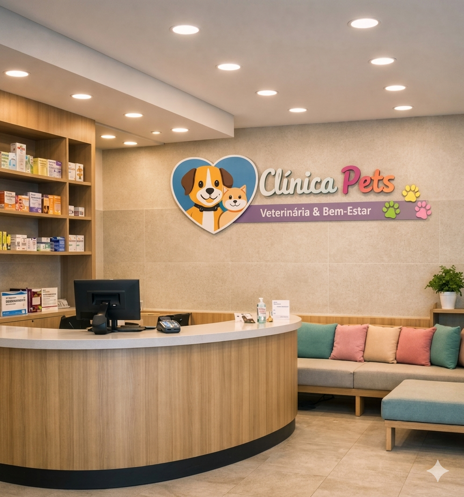
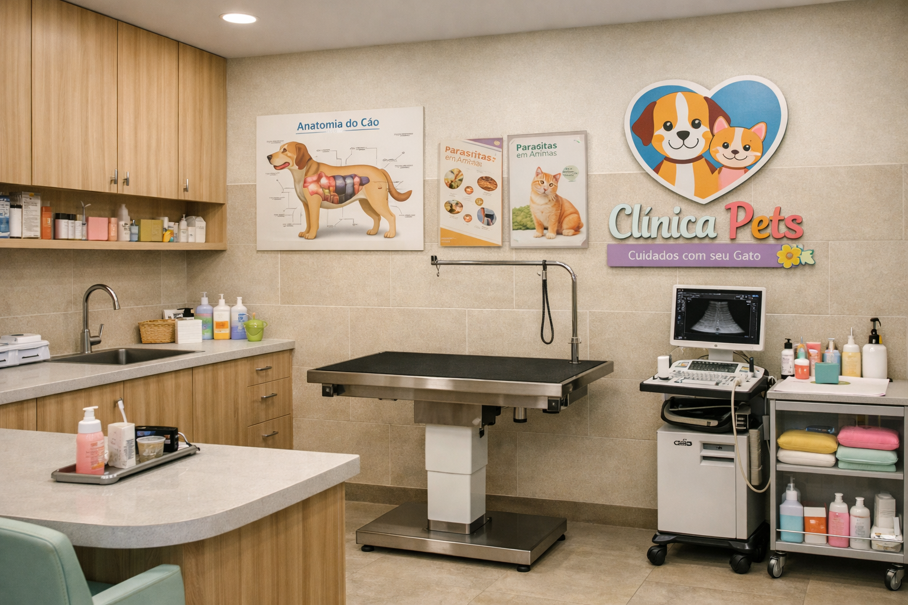
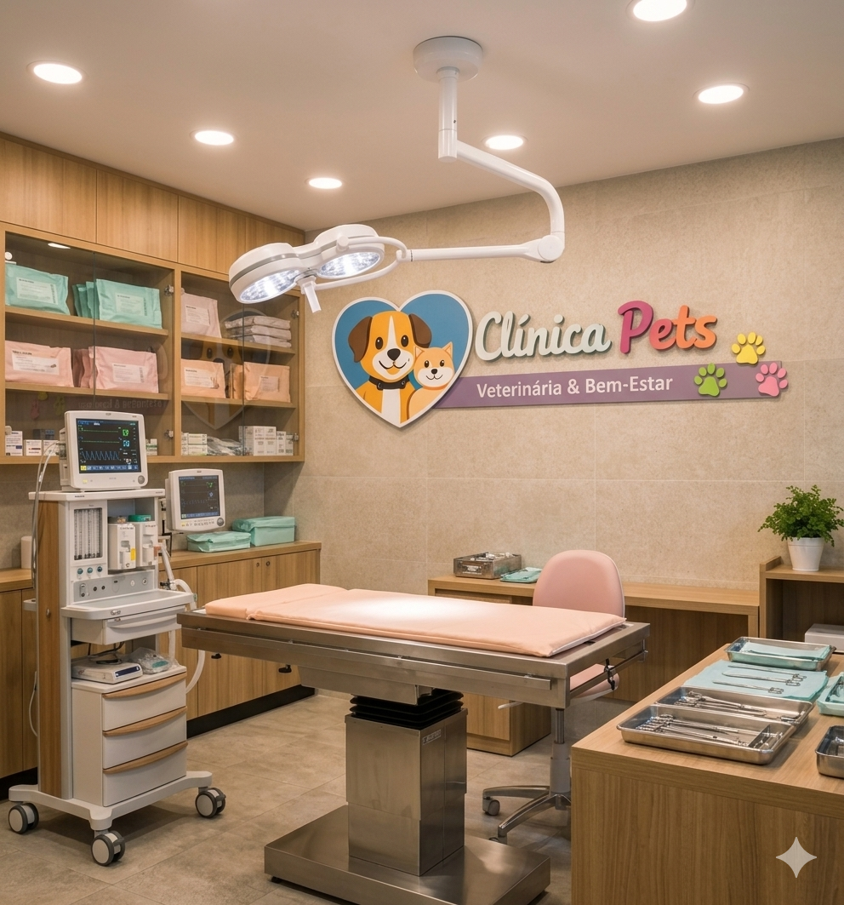
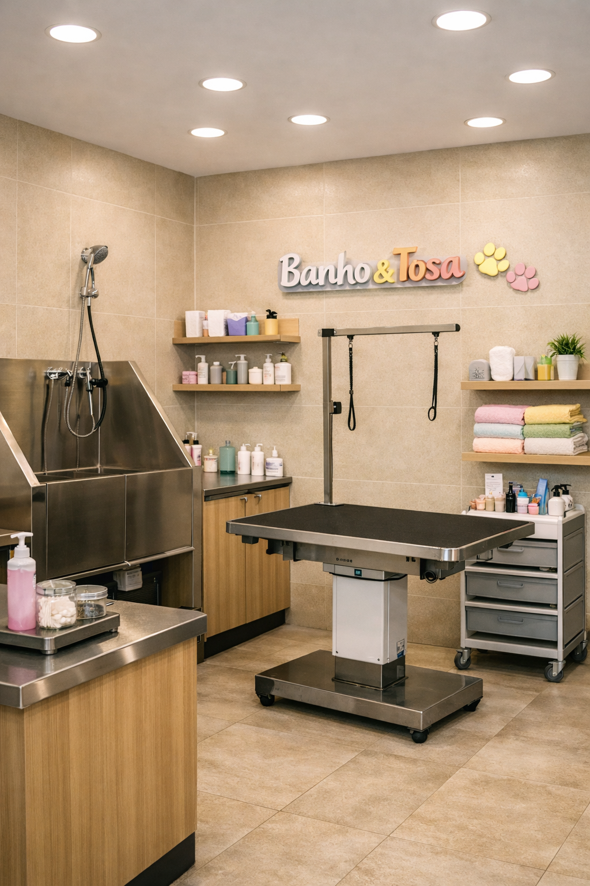

A Nossa História
A Clínica Pets nasceu da paixão por cuidar. Desde a nossa fundação, o nosso objetivo tem sido oferecer um ambiente seguro e profissional para todos os animais.
Conheça a nossa história e as nossas instalações no Porto.
A Clínica Pets nasceu da paixão por cuidar. Desde a nossa fundação, o nosso objetivo tem sido oferecer um ambiente seguro e profissional para todos os animais.
Um ambiente acolhedor para receber o seu pet sem stress.


Equipamentos de última geração para diagnósticos precisos.


O melhor tratamento de beleza e higiene para o seu melhor amigo.
